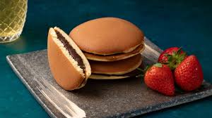

•Un postre típico de la gastronomía peruana qué se elabora a base del maíz morado concentrado junto con fécula de este mismo dando así el relleno principal de nuestro postre
DORAYAKI

El dorayaki es un postre japonés muy popular y delicioso que consiste en dos panqueques esponjosos rellenos de una pasta dulce
PERUYAKI
Peruyaky es una innovacion gastronomica , que mezca los sabores de dos países diferentes conservando sus sabores tradicionales en uno solo , ¡pruebalo ya !